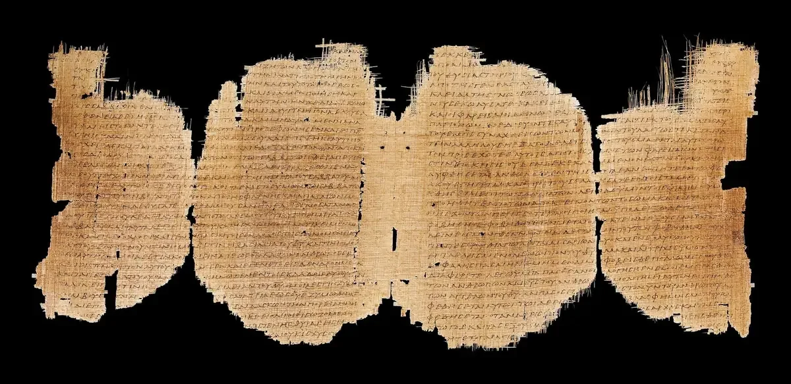
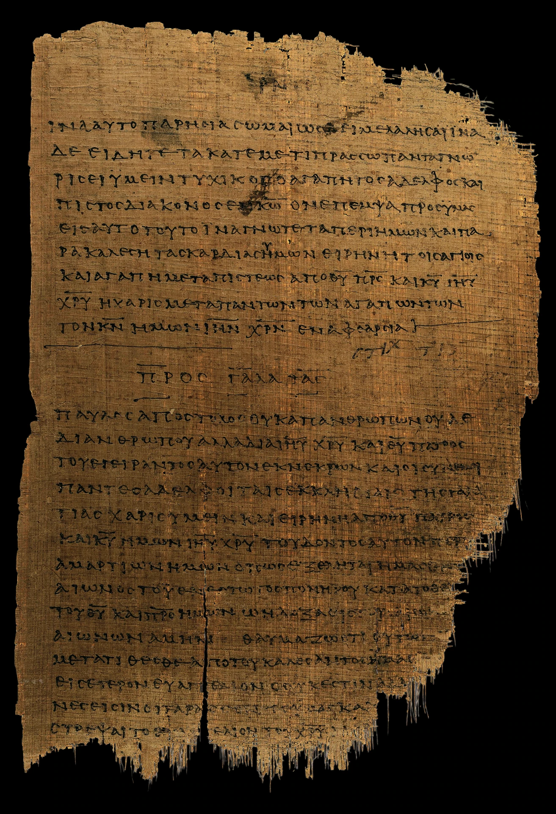
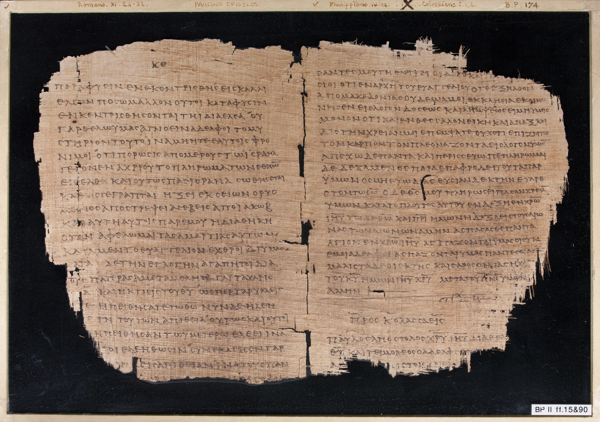
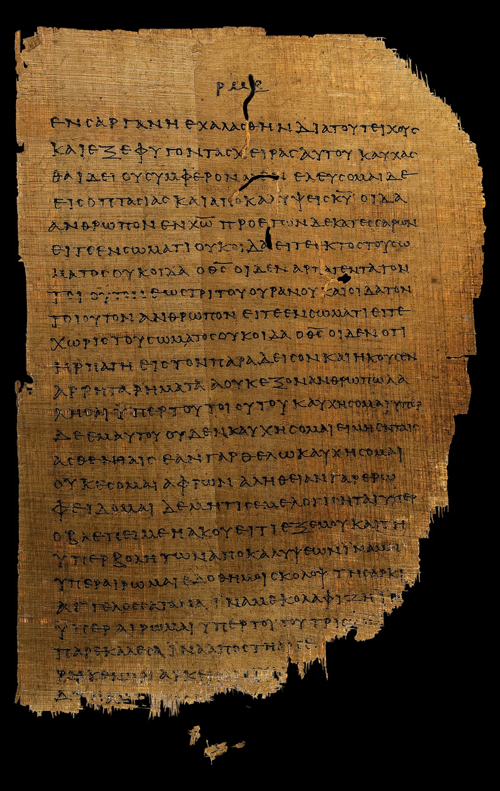
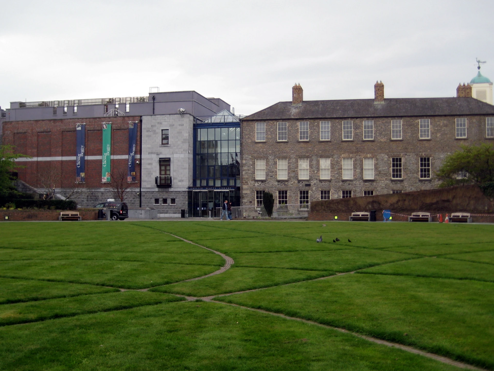
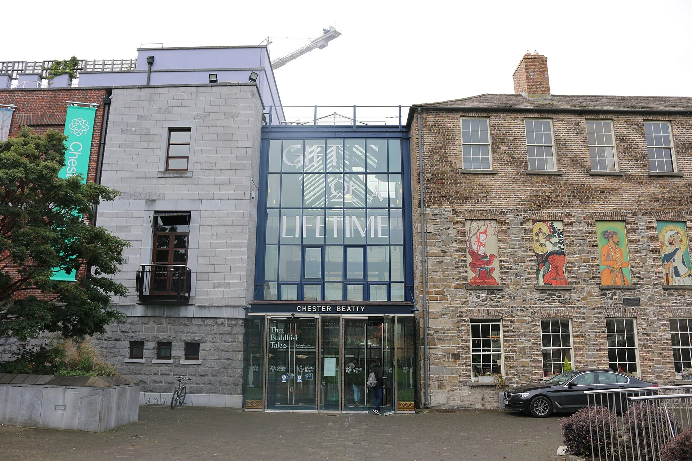

아직 펼치지 않은 카드책을 지키는 약속 · 4체스터 비티 도서관과 성경 파피루스1931년, 한 수집가가 사들인 파피루스 책들이 세상에 알려지자 학자들이 깜짝 놀랐어요. 무엇이 그렇게 놀라웠을까요?1,800년 전 종이(파피루스)에 쓴 성경이 있대!
200년 무렵에 쓴 책더블린 체스터 비티 · 미국 미시간 대학
체스터 비티 도서관과 성경 파피루스
200년 무렵 이집트에서 바울의 편지를 옮겨 적은 책이, 1930년대에 낱장으로 나뉘어 팔렸어요. 지금은 아일랜드 더블린과 미국 앤아버에 나뉘어 있어요. 더블린에 있는 한 장을 등불로 비춰, 이 책이 어떻게 만들어졌는지 찾아보세요.
아주 옛날 종이(파피루스)에 쓴 바울 아저씨 편지 책이 두 나라에 나뉘어 있대. 등불로 비춰 보며 숨은 걸 찾아볼까?
검수 전 시안이에요(기준서 1판). 장면에는 미시간 대학의 P46 자료, 체스터 비티의 그림 설명, 『이란 백과사전』과 아이리시 타임스의 기록에 있는 것만 옮겼어요. 상상은 ‘눈 감고 상상해 보기’에만 썼어요.
시안 확인용카드 단계 미리 보기
1
나뉘어 팔린 책
1930년대 초, 체스터 비티는 이집트 카이로에서 성경 파피루스들을 사들였어요. 그 가운데 바울의 편지를 옮겨 적은 책의 낱장이 10장 있었어요. 이 책을 찾아낸 상인들이 낱장을 나누어 따로따로 팔았던 거예요.
미국 미시간 대학도 같은 책의 낱장을 1931년에 6장, 1933년에 24장 사들였어요. 비티는 그 뒤로 46장을 더 사들였어요. 그래서 이 책은 지금 더블린에 56장, 미국 앤아버에 30장으로 나뉘어 있어요.

미시간 대학의 헨리 샌더스가 먼저 미시간의 30장을 펴냈고, 1936년 영국 박물관의 프레더릭 케니언이 비티가 모은 장까지 함께 펴냈어요. 처음 104장이던 책 가운데 86장이 남았어요.
위 사진은 미시간 대학에 있는 한 쪽이에요. 에베소서가 끝나고 갈라디아서가 시작돼요. 오늘 성경과 달리, 이 책은 에베소서 다음에 갈라디아서를 두었어요.
아주 옛날 책을 여러 장으로 나눠서 팔았대. 그래서 한쪽은 아일랜드에, 한쪽은 미국에 있어!
물어보기책을 여러 장으로 나눠 팔면, 어떤 일이 생길까?
2
반으로 접은 한 장
이 책은 파피루스 낱장 52장을 겹쳐 놓고, 한가운데를 한 번에 접어 만든 한 묶음 책이었어요. 그래서 낱장이 대부분 둘씩 이어져 있었고, 학자들은 처음 책이 몇 장이었는지 꽤 정확히 가늠할 수 있었어요.
더블린에 있는 그 낱장 하나를 비춰 보세요. 어두운 방에서 등불을 들고 다가가듯, 숨은 표시 다섯 곳을 찾아보세요.
손가락이나 마우스로 문질러, 어두운 진열장 속 파피루스 한 장을 등불로 비춰 보세요.

체스터 비티의 P46 낱장(15번째·90번째 장), 200년 무렵 · 자료: 체스터 비티(BP II ff.15&90) · 퍼블릭 도메인 · 위키미디어 공용
빛이 닿으면 숨은 표시가 나타나요.
15번째 장과 90번째 장이 하나로 이어진 낱장이에요. 낱장을 겹쳐 반으로 접은 책, 지금 우리가 넘기는 책과 같은 모양의 이른 모습이에요.
두루마리는 말아 두는 책이라 이렇게 접히지 않아요. 미시간 대학은 이 책을, 낱장을 엮어 만든 지금 책 모양의 이른 모습이라고 설명해요.
종이를 여러 장 겹쳐서 반으로 접으면 책이 되지? 이 책도 그렇게 만들었대.
물어보기15번째 장이랑 90번째 장이 한 장이래! 어떻게 그럴까?
3
손이 닿던 자리
미시간 대학은 이 책 낱장마다 아래쪽 한 귀퉁이가 유난히 닳아 있다고 해요. 읽는 사람들이 손으로 책장을 넘기던 자리라는 거예요.
아래 사진의 쪽에는 고린도후서 12장이 적혀 있어요. 바울이 몸의 가시를 없애 달라고 세 번 기도하자, 은혜가 넉넉하다는 대답을 들었다는 대목이에요.

그리스도인들은 이 구절을, 약할 때 오히려 하나님의 힘이 드러난다는 말씀으로 읽어 왔어요. 1,800년쯤 전에도 누군가 이 쪽을 손으로 넘기며 읽었어요.
책장 아래 귀퉁이가 닳았어. 옛날 사람들이 손으로 넘기던 자리래!
물어보기네가 좋아하는 책은 어디가 제일 많이 닳았어?
4
더블린에 남긴 약속
광산 일로 큰돈을 번 체스터 비티는, 모은 책과 함께 런던에서 더블린으로 옮겨 와 살았어요. 1953년 도서관을 세웠고, 1954년부터 사람들에게 열었어요.
1968년 세상을 떠나며, 그는 모은 것 모두를 아일랜드 사람들에게 남겼어요. 지금은 이사회가 아일랜드 사람들을 대신해 지켜요. 2000년부터는 더블린성 안 시계탑 건물 곁에 새로 지은 곳에 있어요.

미시간 대학은 이 책의 더블린 쪽 낱장 가운데 일부가 체스터 비티에 늘 전시되어 있다고 적어요. 미시간의 30장은 연구 도서관에 있어 전시하지 않는 대신, 누리집에서 누구나 사진으로 볼 수 있어요.
책을 모은 할아버지가 모두 아일랜드 사람들에게 선물로 남겼대.
물어보기네가 아끼는 걸 모두에게 남긴다면, 무엇을 남기고 싶어?
눈 감고 상상해 보기
200년 무렵 어느 저녁, 등잔 불빛 아래 파피루스 책을 펼쳐요. 마른 풀 냄새가 나는 누런 장을 손끝으로 넘기면, 아래 귀퉁이가 바스락거려요. 줄마다 빼곡한 그리스 글자, 편지가 끝나는 자리에는 가운데 맞춘 새 제목. 누군가 바울의 편지를 소리 내어 읽기 시작해요.
눈을 감아 봐. 깜깜한 저녁, 작은 등불 아래 옛날 책을 펼쳐. 바스락바스락, 손으로 책장을 넘겨. 누군가 편지를 소리 내어 읽어!
나의 자리
1,800년 전 누군가 손에 들고 읽던 책장을 마주한다면, 어떤 마음이 들까요?
아주 옛날 친구가 읽던 책을 본다면 어떤 기분일까?
마음에 닿는 한 줄을 고르거나 직접 써 보세요. 한 줄을 남기면 이 자리의 도장이 찍혀요. 이 기기에만 저장돼요.
더 깊이
궁금한 칸만 펼쳐 읽어도 괜찮아요.
알고 보면
P46이라는 이름 학자들이 신약 파피루스에 붙인 번호로, 46번 파피루스라는 뜻이에요. 체스터 비티에서는 ‘파피루스 2번’, 미시간 대학에서는 ‘소장 번호 6238’이라고 불러요.
로마서 다음에 히브리서 이 책은 로마서 바로 다음에 히브리서를 두었어요. 미시간 대학은 이 차례가 히브리서를 중요하게 여긴 그때 이집트의 생각을 보여 준다고 설명해요.
세 글자로 줄인 거룩한 이름 ‘예수’ 같은 거룩한 이름은 줄여서 적었는데, 이 책은 세 글자로 줄인 이른 모양을 써요. 두 글자로 줄이는 모양은 4세기부터 퍼졌어요.
가운데로 갈수록 좁은 장 신약 사본 연구자 대니얼 월리스는, 이 책의 장이 처음부터 52번째 장까지는 점점 좁아지고 53번째 장부터 다시 넓어진다고 적었어요. 겹쳐 접은 한 묶음 책이라는 또 하나의 표시예요.
기록마다 다른 점
처음 장 수 미시간 대학은 처음 104장이었다고 적어요. 위키미디어 공용에 옮겨 둔 체스터 비티 낱장의 설명은 처음 112장 가운데 86장이 남았다고 적어요.
더블린으로 온 해 『이란 백과사전』은 비티가 1950년 더블린에 자리 잡았다고 적고, 아이리시 타임스는 1949년이라고 적어요.
쓴 때 앞면은 200년 무렵이라고 했어요. 글씨 모양으로 175~225년 사이로 보는 학자가 많아요. 1세기 말로 끌어올리자는 주장도 있었지만 받아들여지지 않았다고 월리스는 적어요.
직접 가 보기

확인한 날 · 2026년 11월 18일 · 바뀌기 쉬운 정보라 정기적으로 다시 확인해요
체스터 비티는 더블린성 안에 있고, 들어가는 값이 없어요(기부 권장 5유로). 다만 2026년 11월 18일 누리집에는 ‘아일랜드 정부의 권고로 다음 알림이 있을 때까지 문을 닫는다’는 알림이 있어요. 가기 전에 꼭 확인하세요.
미시간 대학의 30장은 누리집에서 사진으로 볼 수 있어요.
등불로 비춘 한 장 금박
파피루스 한 장의 숨은 표시 다섯 곳을 모두 찾으면 카드에 금박이 입혀져요.
숨은 표시 다섯 곳을 모두 찾기
아이와 함께 채색
아이와 함께 ‘영화처럼 보기’를 끝까지 보면 카드가 채색돼요.
아이와 함께 ‘영화처럼 보기’를 끝까지 보기
근거 보기 (11)
- 미시간 대학 「Reading the Papyri」: The Discovery of P46 — 더블린 56장·앤아버 30장, 비티의 10장, 미시간 1931년 6장·1933년 24장, 샌더스, 비티의 46장, 케니언 1936, 104장 가운데 86장, 상인들이 나누어 팖
- 미시간 대학: P46의 역사 — 낱장이 둘씩 이어져 있음, 한 묶음(단일 접장) 책, 처음 크기를 가늠함
- 미시간 대학: P46의 차례 — 로마서·히브리서·…·에베소서·갈라디아서, 이집트의 생각
- 미시간 대학: 편지 제목(시작하는 곳, 가운데) · 줄 수 메모(편지 끝, 부풀림) · 거룩한 이름(세 글자) · 코덱스의 특징(쪽 번호)
- 미시간 대학: P46의 지금 — 유리 사이에 보관, 체스터 비티 일부 상설 전시, 연구 도서관, 사진 공개
- 미시간 대학 온라인 전시 「Epistles of St. Paul」 — 지금 책 모양의 이른 모습, 낱장 아래 귀퉁이가 닳은 자리
- Daniel B. Wallace, 「Some Notes on the Earliest Manuscript of Paul’s Letters」(2013) — 겹쳐 접은 한 묶음 책, 52번째 장까지 좁아지고 53번째부터 넓어짐, 200년 무렵
- Encyclopaedia Iranica: Chester Beatty Library — 1875~1968, 광산 일, 1950년 더블린, 1953년 세움·1954년 엶, 아일랜드 사람들에게 남김(이사회), 카이로에서 산 파피루스
- The Irish Times, 「An Irishman’s Diary」 — 2000년부터 더블린성 시계탑 곁, 1949년 아일랜드로 옴
- 체스터 비티 누리집 — 문 닫음 알림, 여는 때, 기부 권장 5유로, 더블린성 · 2026-11-18 확인
- 위키미디어 공용: 체스터 비티 낱장(BP II ff.15&90) 설명 — 로마서 11장, 빌립보서 끝·골로새서 처음, 112장 가운데 86장
그림·사진·소리 출처
- 자료: 체스터 비티(BP II ff.15&90) · 퍼블릭 도메인 · 위키미디어 공용
- 자료: 미시간 대학 파피루스 소장품(P.Mich.inv. 6238) · 퍼블릭 도메인 · 위키미디어 공용
- 자료: 미시간 대학 파피루스 소장품(P.Mich.inv. 6238) · 퍼블릭 도메인 · 위키미디어 공용
- 사진: Harold Strong · CC BY-SA 2.0 · 위키미디어 공용(geograph.org.uk)
- 사진: PersianDutchNetwork · CC BY-SA 4.0 · 위키미디어 공용
- 자료: 체스터 비티 파피루스 P45(3세기) · 퍼블릭 도메인 · 위키미디어 공용
‘처음 만나는 기독교 문화’의 깊은 카드예요. 실제 인물의 사진은 쓰지 않았어요. 카드 단계와 남긴 글은 이 기기에만 저장돼요.